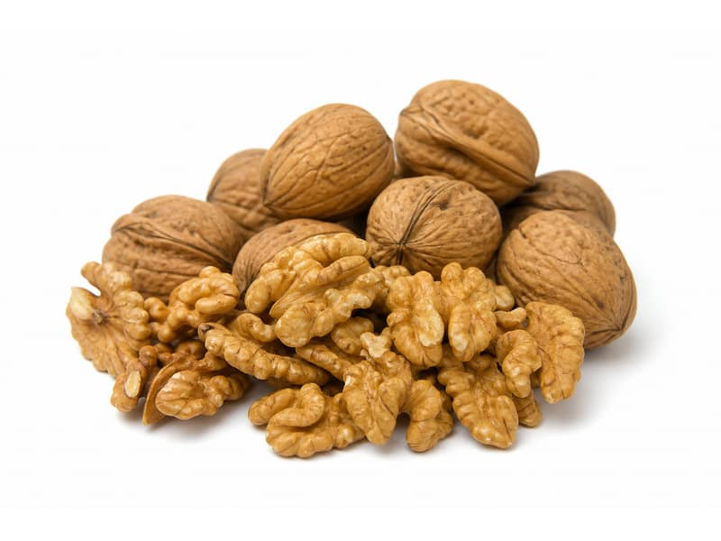

Orzechy
Orzechy włoskie
Orzechy włoskie: 15 g białka, 654 kcal, 14 g węglowodanów i 65 g tłuszczu na 100 g. Kategoria: Orzechy.
Kalorie654 kcalna 100 g
Białko / proteiny15 g
Węglowodany14 g
Tłuszcz65 g
Cena (szac.)~6,00 złza 100 g
Ceny zaktualizowano: maj 2026 (szacunek — ceny w popularnych supermarketach)
Porcja: garść (30g)
| Kalorie | 196 kcal |
|---|---|
| Białko | 4.5 g |
| Węglowodany | 4.2 g |
| Tłuszcz | 19.5 g |
| Cena (szac.) | ~1,80 zł |
Szczegółowe składniki odżywcze na 100 g
| Wartość energetyczna (kalorie) | 654 kcal |
|---|---|
| Białko (proteiny) | 15 g |
| Węglowodany | 14 g |
| Tłuszcz | 65 g |
| Tłuszcze nasycone | 6 g |
| Tłuszcze nienasycone | 59 g |
| Witaminy i minerały | Omega-3, Magnez, Witamina E |
| Współczynnik kcal / 1 g białka | 43.6 |
| Cena produktu (szac. za 100 g) | ~6,00 zł |
| Cena za 100 g białka (szac.) | ~40,00 zł |